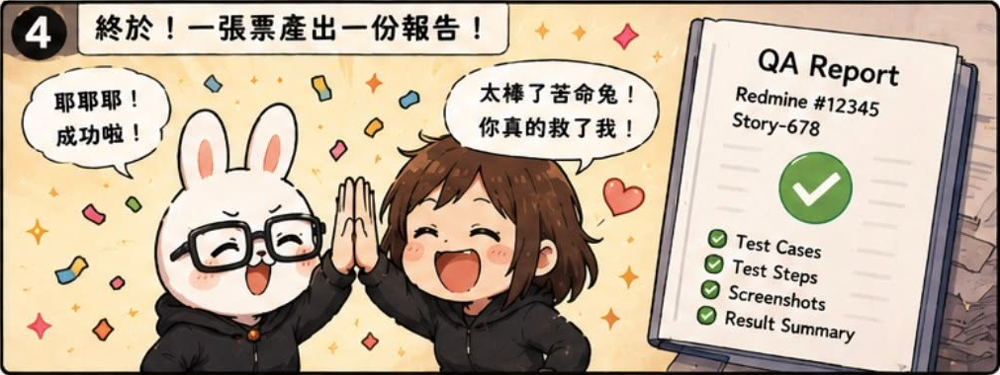
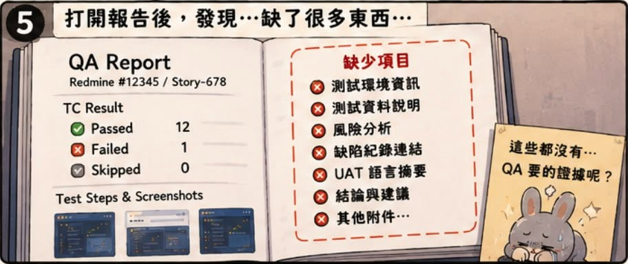

AI QA Portfolio
🐰 作者後記
這一切其實只是因為我懶。
身為 QA，最花時間的工作之一就是整理測試證據與撰寫測試報告。
於是我開始思考：
如果 AI 能理解測試結果，是不是有機會幫我完成這件事？
🔥 真實案例
當時遇到的問題
問題：
測試報告整理成本高。
常常需要：
- 截圖
- 整理步驟
- 撰寫結果
- 彙整風險
大量時間花在整理，而不是測試本身。
🛠 解決方案
我嘗試的解法
導入 Claude Code。
讓 AI 協助：
- 收集測試結果
- 整理 Evidence
- 產出測試報告
💡 我學到什麼
當時的我以為：
只要把票丟給 AI，它就能完成工作。
後來才發現：
真正困難的不是產出報告。
而是讓 AI 理解上下文。
🏷 關鍵能力
AI QA 關鍵字
- AI Assisted Testing
- Test Report Generation
- QA Workflow Automation